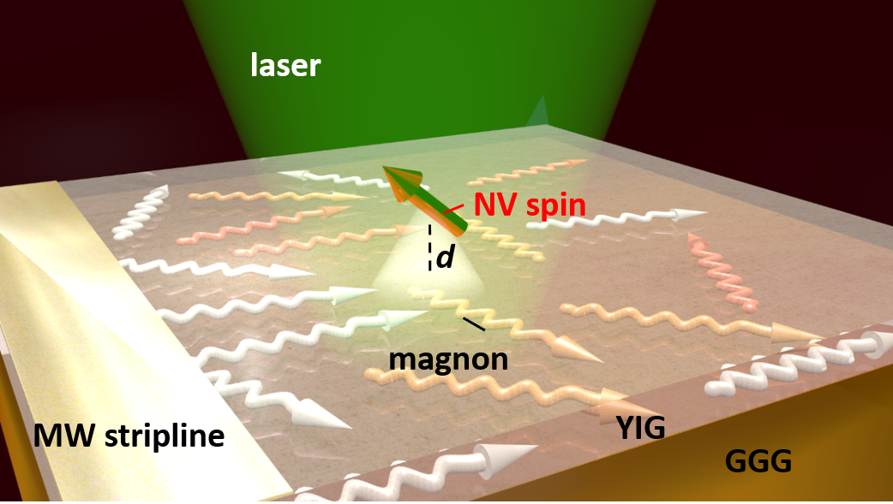
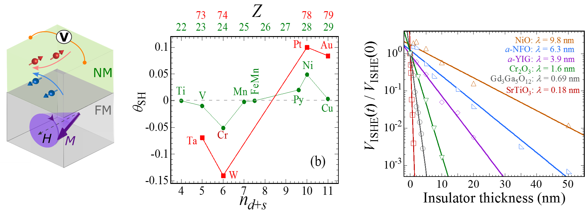
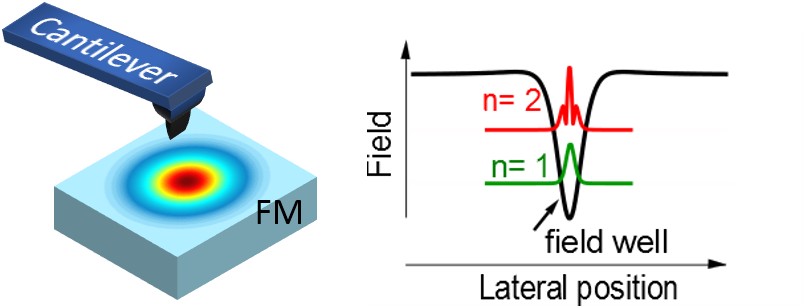

Publications
Publication highlights:
-
Measure spin voltage on the nanoscale using NV centers
 C. H. Du et al., Science 357, 195 (2017)
Highlighted in Harvard News
Highlighted in IEEE spectrum
-
Discovery of robust spin transport across antiferromagnetic insulators and scaling behavior of spin orbit couping in transition metals
 C. H. Du et al., Phys. Rev. Lett. 111, 247202 (2013)
C. H. Du et al., Phys. Rev. B. Rapid Comm. 90, 140407(R) (2014)
H. L. Wang. et al., Phys. Rev. Lett. 113, 097202 (2014)
-
Imaging magnetic nanostructure and angular momentum transfer between localized spin wave modes in a magnetic insulator
 C. H. Du et al., Phys. Rev. B 92 , 214413 (2015)
R. Adur et al., Phys. Rev. Lett. 113, 176601 (2014)
- H. Zhang*, M.J.H. Ku*, F. Casola, C.H. Du, T. van der Sar, M.C. Onbasli, C.A. Ross, Y. Tserkovnyak, A. Yacoby, R.L. Walsworth, Spin-torque oscillation in a magnetic insulator probed by a single-spin sensor, arXiv:1810.0730
2017
- C. H. Du*, T. Van der Sar*, T. X. Zhou*, P. Upadhyaya, F. Casola, H. Zhang, M. C. Onbasli, C. A. Ross, R. L. Walsworth, Y. Tserkovnyak, and A. Yacoby, Control and Local Measurement of the Spin Chemical Potential in a Magnetic Insulator, Science 357, 195 (2017)
- H. L. Wang, C. H. Du, P. C. Hammel, and F. Y. Yang, Comparative Determination of Y3Fe5O12/Pt Interfacial Spin Mixing Conductance by Spin-Hall Magnetoresistance and Spin Pumping, Appl. Phys. Lett. 110, 062402 (2017)
2015
- C. H. Du*, I. Lee*, R. Adur, Y. Obukhov, C. Hamann, B. Buchner, J. McCord, D. V. Pelekhov, and P. C. Hammel, Imaging Interfaces Defined by Abruptly Varying Internal Magnetic Fields by Means of Scanned Nanoscale Spin Wave Modes, Phys. Rev. B 92, 214413 (2015)
-
S. A. Manuilov, C. H. Du, R. Adur, H. L. Wang, V. P. Bhallamudi, F. Y. Yang, and P. C. Hammel, Spin Pumping from Spin waves in Thin Film YIG, Appl. Phys. Lett. 107, 042405 (2015)
- H. L. Wang*, C. H. Du*, P. C. Hammel, and F. Y. Yang, Spin Transport in Insulators Mediated by Magnetic Correlations, Phys. Rev. B 91, 220410(R) (2015)
2014
- C. H. Du, R. Adur, H. L. Wang, S. A. Manuilov, F. Y. Yang, D. V. Pelekhov, and P. C. Hammel, Experimental and Numerical Understanding of Localized Spin Wave Mode Behavior in Broadly Tunable Spatially Complex Magnetic Configurations, Phys. Rev. B 90, 214428 (2014)
- C. H. Du*, H. L. Wang*, F. Y. Yang, and P. C. Hammel, Systematic Variation of Spin-orbit Coupling with d-orbital Filling: Large Inverse Spin Hall effect in 3d Transition Metals, Phys. Rev. B. Rapid Comm. 90, 140407(R) (2014)
- R. Adur, C. H. Du, H. L. Wang, S. A. Manuilov, V. P. Bhallamudi, C. Zhang, D. V. Pelekhov, F. Y. Yang, and P. C. Hammel, Damping of Confined Modes in a Ferromagnetic Thin Insulating Film: Angular Momentum Transfer Across a Nanoscale Field-defined Interface, Phys. Rev. Lett. 113, 176601 (2014)
-
H. L. Wang*, C. H. Du*, P. C. Hammel, and F. Y. Yang, Antiferromagnonic Spin Transport from Y3Fe5O12 into NiO, Phys. Rev. Lett. 113, 097202 (2014)
-
H. L. Wang*, C. H. Du*, P. C. Hammel, and F. Y. Yang, Spin Current and Inverse Anomalous Hall Effect in Ferromagnetic Metals Probed by Y3Fe5O12-based Spin Pumping, Appl. Phys. Lett. 104, 202405 (2014)
-
C. H. Du*, H. L. Wang*, F. Y. Yang, and P. C. Hammel, Enhancement of Pure Spin Currents in Spin Pumping Y3Fe5O12/Cu/metal Trilayers through Spin Conductance Matching, Phys. Rev. Applied 1, 044004 (2014)
- H. L. Wang*, C. H. Du*, Y. Pu, R. Adur, P. C. Hammel, and F. Y. Yang, Scaling of Spin Hall Angle in 3d, 4d and 5d Metals from Epitaxial Y3Fe5O12/metal Spin Pumping, Phys. Rev. Lett. 112, 197201 (2014)
- H. L. Wang*, C. H. Du*, P. C. Hammel, and F. Y. Yang, Strain-Tunable Magnetocrystalline Anisotropy in Epitaxial Y3Fe5O12 Thin Films, Phys. Rev. B. 89, 134404 (2014)
- C. S. Wolfe*, V. P. Bhallamudi*, H. L. Wang, C. H. Du, S. A. Manuilov, R. M. Teeling-Smith, A. J. Berger, R. Adur, F. Y. Yang, and P. C. Hammel, Off-Resonant Manipulation of Spins in Diamond via Precessing Magnetization of a Proximal Ferromagnet, ,Phys. Rev. B. Rapid Comm. 89, 180406(R) (2014)
2013
- C. H. Du*, H. L. Wang*, Y. Pu, T. L. Meyer, P. M. Woodward, F. Y. Yang, and P. C. Hammel, Probing the Spin Pumping Mechanism: Exchange Coupling with Exponential Decay in Y3Fe5O12/barrier/Pt Heterostructures, Phys. Rev. Lett. 111, 247202 (2013)
-
H. L. Wang*, C. H. Du*,Y. Pu, R. Adur, P. C. Hammel, and F. Y. Yang, Large Spin Pumping from Epitaxial Y3Fe5O12 Thin Films to Pt and W Layers, Phys. Rev. B. Rapid Comm. 88, 100406(R) (2013)
- C. H. Du, R. Adur, H. L. Wang, A. J. Hauser, F. Y. Yang, and P. C. Hammel, Control of Magnetocrystalline Anisotropy by Epitaxial Strain in Double Perovskite Sr2FeMoO6 Films, Phys. Rev. Lett. 110, 147204 (2013)
Google Scholar
* denotes equal contribution.
Pre-prints

|
Department of Physics |